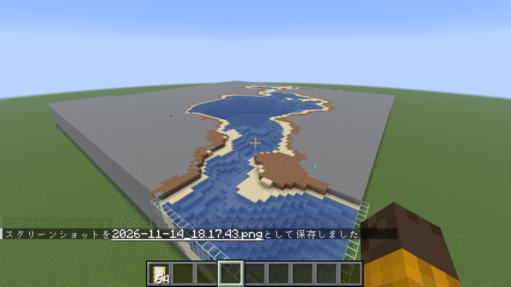
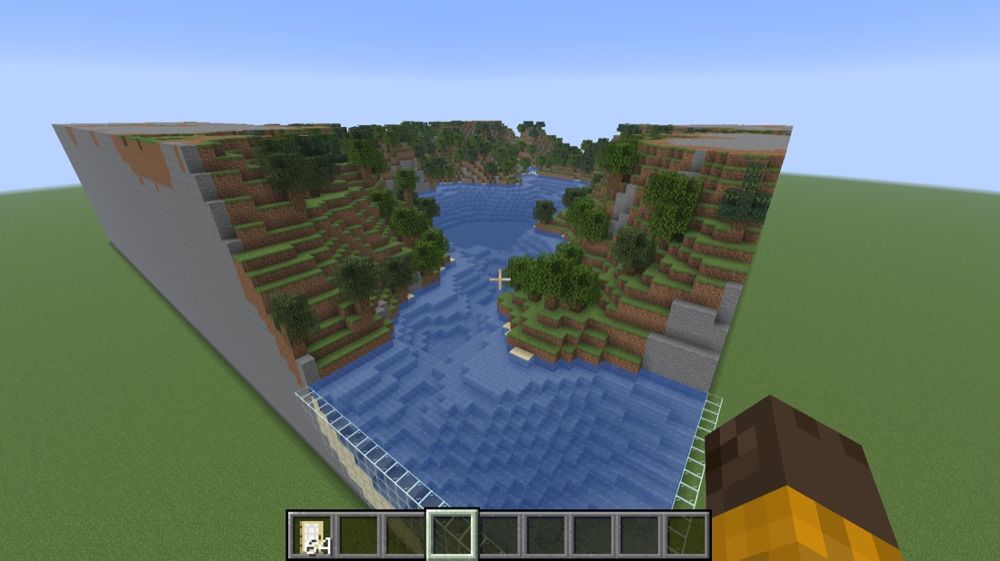
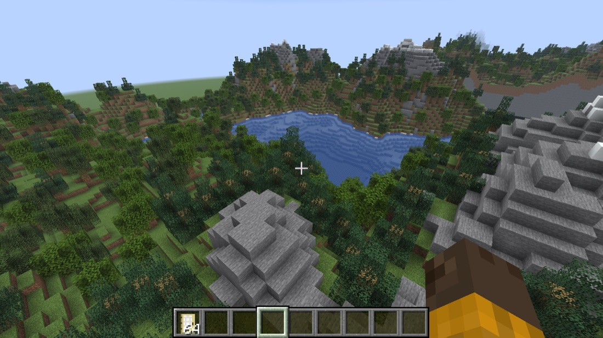
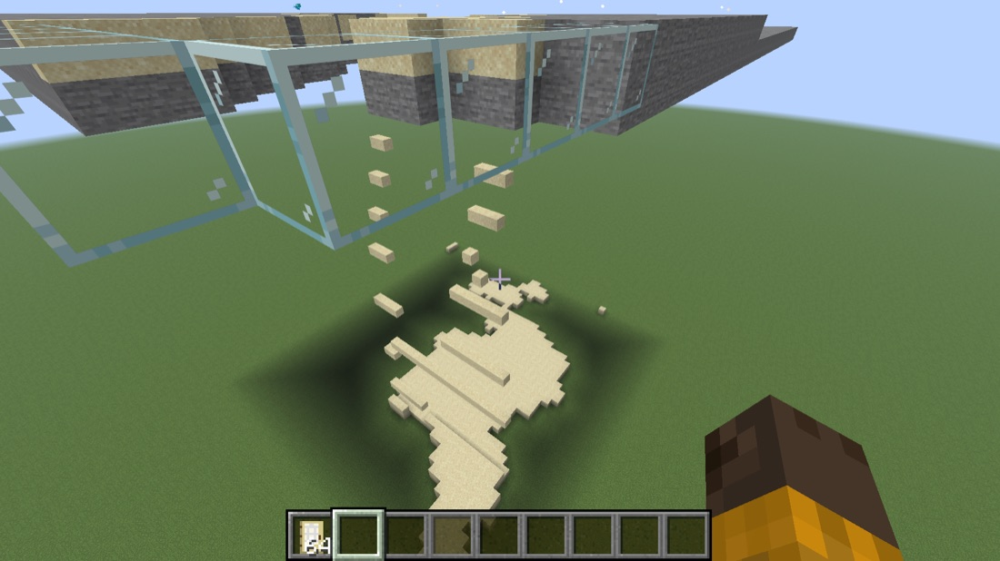
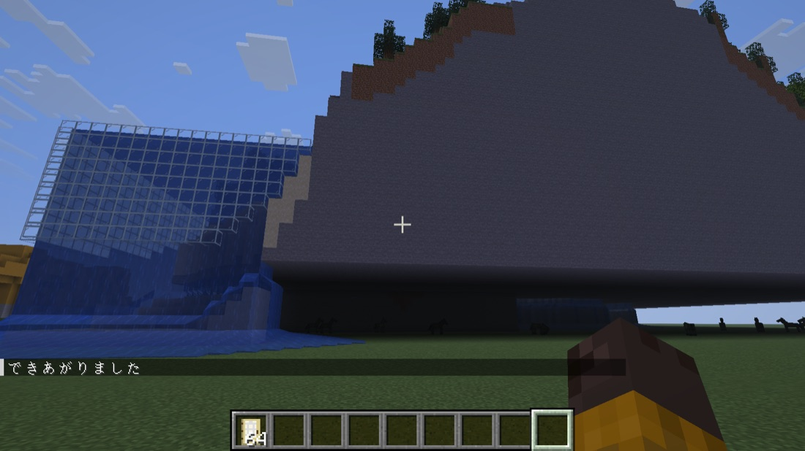
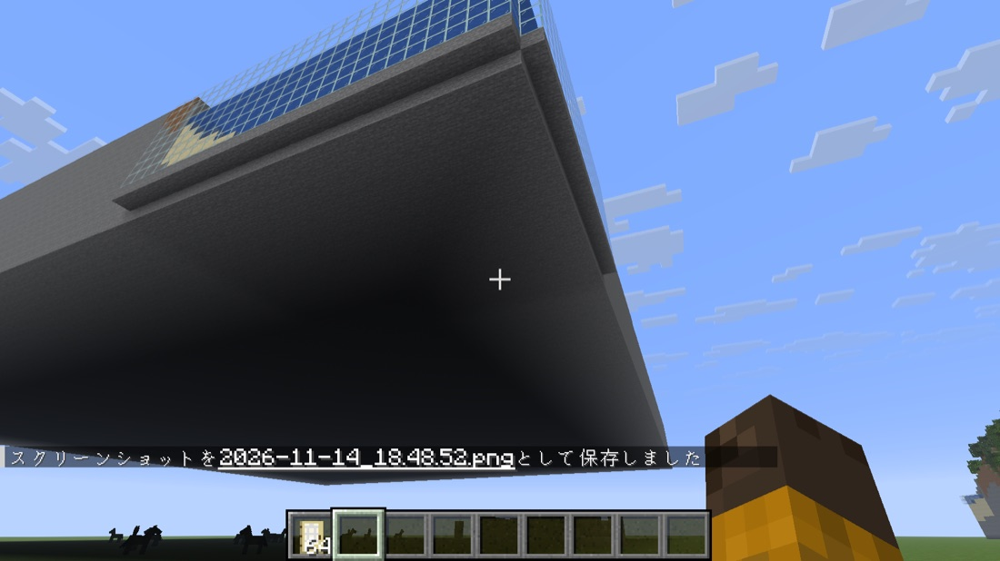

← マインクラフトで試してみた (3 / 3)
voxel:build_slow)いちばん大きい設定の風景 (山と湖・夏、横 128 マス・山の高さ 40 マス、約 32 万ブロック) を、/function voxel:build_slow で下の段から少しずつ置いた記録です。

下の段から 1 段ずつ、石・砂・土が広がり、その段の最後に水とまわりのガラスが置かれていきます。右側の茶色い土の上に見える水色の小さな点が、建てる係のアレイです。

中腹まで積み上がり、斜面には草と木が並びはじめました。水もガラスの枠の中におさまっています。

2 分ほどで山頂の雪まで積み上がり、「できあがりました」と出ました。最後のアレイがきらきらして消えたかどうかは、広くて追いきれず、画面では確かめられませんでした。


最初に空を飛んだまま /function voxel:build_slow を打ったところ、その高さから上に建ちはじめたため、風景が地面から浮きました。1 段目にあった砂が下へ落ちて底に穴があき、ふちのガラスの下にもブロックがなかったため、そこから地面へ水が流れ出しました。
そこで、1 段目の砂をすべて石に変え、ふちのガラスの下端にも石を置くように直しました。

直したあとに、もう一度空中で置いて下から見上げた写真です。底がすべて石でふさがり、ガラスの下端も石で支えられて、砂も水も落ちなくなりました。また、試している途中で datapacks フォルダに古い zip ファイルの名前を変えて残していたところ、古いファイルの中身が読み込まれてしまうこともわかりました。入れ替えるときは、古い zip をフォルダの外に出す必要があります。